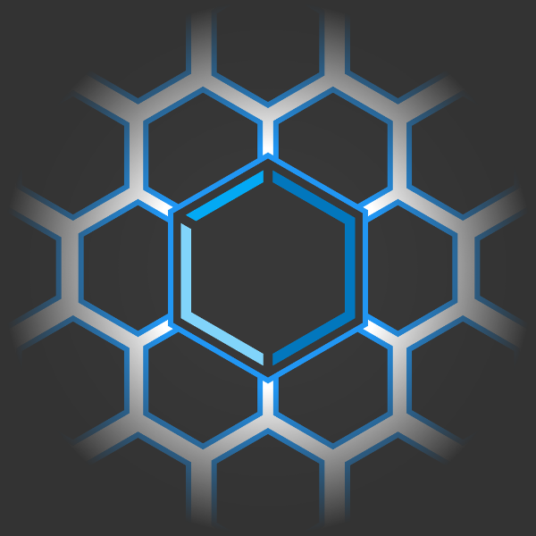
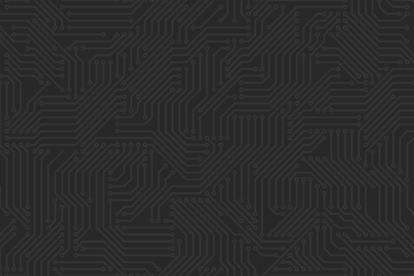

Javascript
est monlanguage
de
prédilection
, sa naturetrès
flexible
et les api qu'il intégre me permettent de mettre en place de façonefficace
desapplications
complexes
.Le langage est fort d'unelarge
communauté
principalement basés sur le "libre" qui offre un soutien et des librairies d'une grande aide.HTML5
est lefondement
d'une page web, il est monpoint
d'entrée
entre l'utilisateur
et l'application
. La connaissance des possiblités qu'il m'offre me permettent de faire les bons choix afin d'avoir unestructure
des donnéescompréhensible
etcohérente
.Css3
est la pierre angulaire me permettant de donner à chaque applicationune
identitée
visuelle
propre
. Aussi bien par l'apparence
que par le biais d'animations
, il me permet de mettre en placeune
véritable
interactivité
visuelle entre l'application et l'utilisateur.WebGL
me permet d'intégrer desrendu
3D
. Sa performance se fait ressentir par l'accélération
matérielle
. L'utilisation deThree.js
et la connaisance deGLSL
me permet de développer de tels rendu aisément.Angular
est une librairie parfaitement adaptée à mes besoin afin de contruire de façonrapide
et
claire
des applications web. L'utilisation de"best
practices"
me permet de véritablement retirer le potentiel et l'optimisation
qui me sont nécessaires afin de réaliser desapplications
se voulantperformantes
.[APPRENTISSAGE]
Polymer
est une librairie spécialement créée afin de rendre lacréation
d'applications
leplus
simple
et
rapide
possible. Basé sur un système de"component"
, elle me permet d'étendre
les
possibilités
qui me sont offertes par l'html5.
Canvas
me permet d'intégrer desrendu
2D
contrairement à Webgl qui permet la 3D. Elle m'est cependant bien plussimple
d'utilisation
que cette dernière. Elleconvient
parfaitement
pour lerendu
de
graphique
ou autrescourbes
destatistics
.Node.js
est le point d'entrée permettant d'étendre
mon expertise duJavascript
au
côté
serveur
, par unmême
langage
côtéclient
etserveur
, ainsi un developpement plus homogène entre client et serveur m'est permis.Npm
met à disposition unlarge
choix
de
"packages"
. Node.js est aussi un serveurtrès
performant
grâce à son styleasynchrone
.MongoDB
est la base de données de typeNoSQL
que j'utilise le plus fréquement. Des librairies ou packages permettent del'utiliser
de
façon
simple
et
rapide
dans la plupart des langages que j'utilise. La grande puissance de ce type de base de données et dene
pas
être
restreinte
par
des
schémas
de
données
.SQL
reste un language de communication avec les bases de données quipeu
se
révéler
trés
utile
dans certains cas. Et même si son utilisation recule face au NoSQL, il reste bon de l'avoir à ma disposition et del'utiliser
au
besoin
.Less
n'est pas à proprement parler un package serveur. Mais je considére son utilisation plus adaptée au coté serveur, afin derendre
l'écriture
du
css
plus
lisible
et donner lapossibilité
d'utiliser
des
fonctions
dans la définition du style.[APPRENTISSAGE]
Dart
me permet une structuration des applications plus stricte que Javascript, cela permet de rendre letravail
d'équipe
plus
rapide
et
lisible
. De plus ilintégre
des packages pourangular
et
polymer
.[APPRENTISSAGE]
Node-webkit
me permet la création d'applications
bureau
.Basé
sur
Chromium
pour le renduet
Node.js
pour la gestion, ces deux technologies se révéle une fois combinée trés efficases.java
J'ai derrière moiplusieurs
années
de
pratique
de ce langage. S'il n'est plus mon language de prédilection il reste un langageorienté
objet
que j'apprécie.autodidacte
Administration, maintenance de systèmes et d'applications répartis
Informatique et Réseaux pour l'Industrie et les Services Techniques